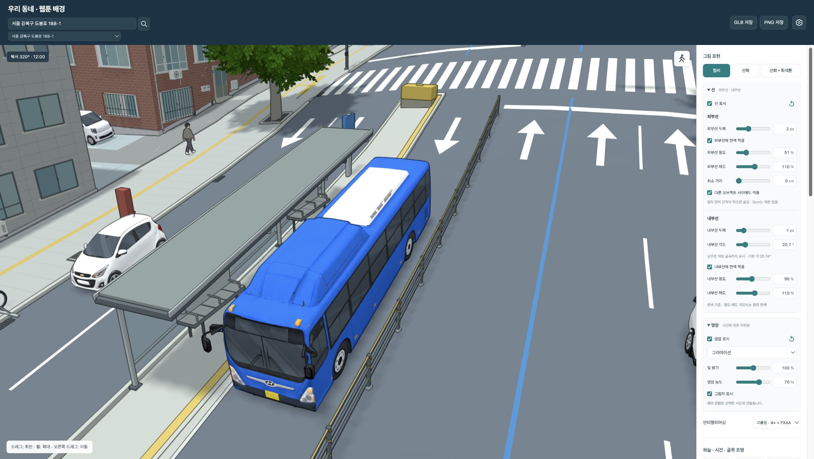
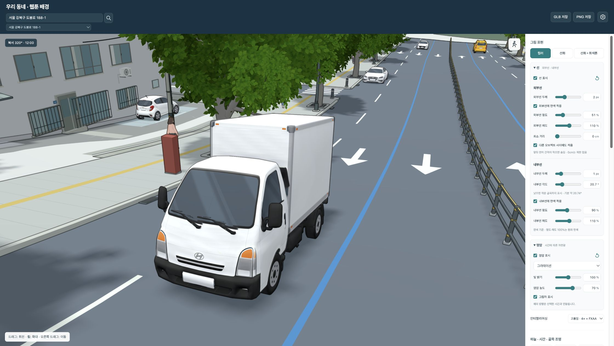
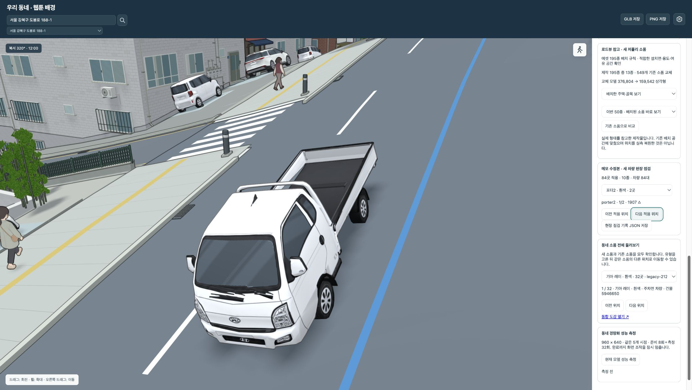
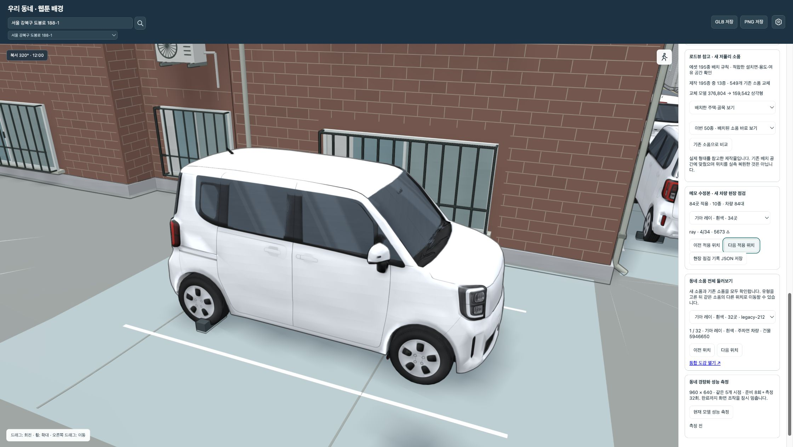
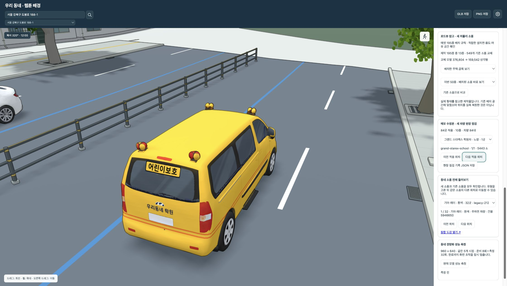
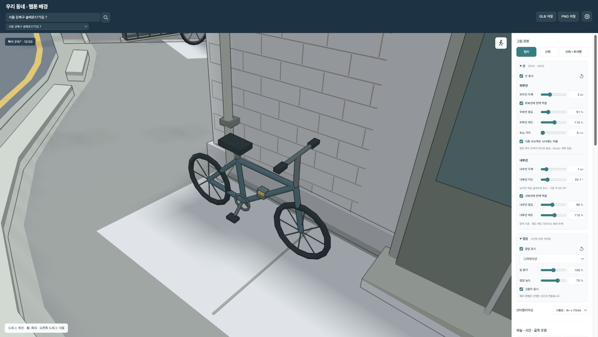
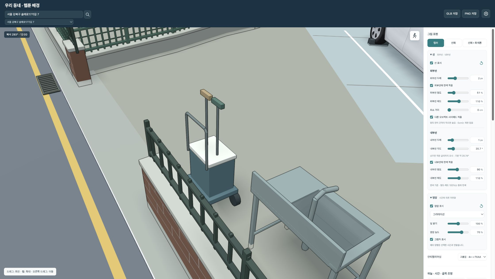

골목 동네에서는 이번 재제작분 중 자전거·청소도구함 2종의 실제 배치를 확인했고, 새 차량 66대가 기존 주차 위치를 대체했습니다.

중앙 정류장 · 시내버스
과도하게 넓던 차폭을 조정해 정류장 지붕과 겹쳐 보이던 부분을 줄였습니다.

일반 차로 · 택배 탑차
차선 방향에 맞추고 네 바퀴를 기준으로 차체의 경사를 맞췄습니다.

일반 차로 · 포터
험한 도로 경계에서 같은 차선의 가까운 위치를 비교해 바퀴 뜸을 줄였습니다.

주택 주차면 · 레이
주차면의 길이 방향으로 회전하고, 실제 차폭에 맞춰 주차선과 멈춤턱을 정렬했습니다.

일반 차로 · 학원차
추가로 등록된 노란 스타렉스 학원차도 함께 연결했습니다.

골목 벽 옆 · 재제작 자전거
바퀴를 변형하지 않고 두 바퀴의 접점을 기준으로 차체를 경사에 맞춥니다.

마당 가장자리 · 청소도구함
재제작 모델을 기존 생활 소품 위치에 연결했습니다.
큰 도로 장면의 84대 접지 기록에서 최대 바퀴 틈은 2.32cm입니다. 삭제한 비차량 legacy 181·202·204·205와 a177은 해당 장면 배치 목록에서 0건입니다. 기존 삭제 차량의 모델을 되살리지 않고 새 Tripo 차량으로 교체했습니다.
화면은 주차면·버스정류장·일반 차로·골목 소품을 이동하며 확인했습니다. 모든 개별 소품을 전수 촬영한 결과는 아닙니다. 차량 치수와 배치는 장면에 맞춘 추정이며 실측 복원이 아닙니다.
현재 결과는 로컬 우리동네에 반영했습니다. 처음 열 때 데이터와 텍스처 로딩에 시간이 걸릴 수 있습니다. 이번 작업에서 FPS 전후 비교를 새로 수행하지는 않았습니다.
차량 접지·배치 기록 JSON